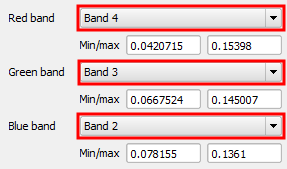

In the Style tab of the Layer Properties dialog:
Band 4Band 3Band 2

After clicking Load, you should see the Min and Max values of each band change. This is an important step, that you should do every time you modify the bands' combination to make sure that the image gets well contrasted
Click OK to apply the changes and close the Layer Properties dialog.